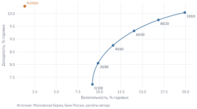
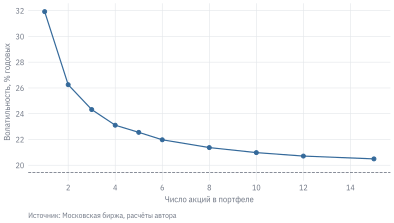
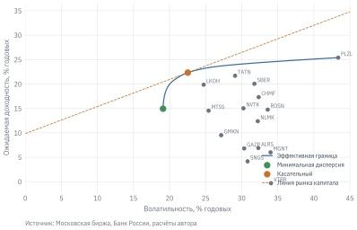
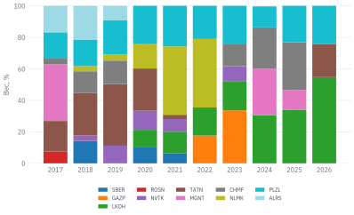

Код
import numpy as np
import pandas as pd
import matplotlib.pyplot as plt
from scipy.optimize import minimize
from sklearn.covariance import LedoitWolf
from qf import data, plotВ сентябре 2026 г. аналитик решает собрать портфель из 15 крупных российских акций по всем правилам учебника. Он берёт месячные доходности за последние пять лет, оценивает ожидаемые доходности и ковариации и находит портфель с максимальным коэффициентом Шарпа. Ответ оптимизатора: 100% капитала вложить в одну акцию, TATN (ПАО «Татнефть» им. В. Д. Шашина, ИНН 1644003838). Годом раньше та же процедура давала портфель из 3 акций: LKOH – 70%, TATN – 27%, PLZL – 3%.
Теория, созданная, чтобы обосновать диверсификацию, советует сложить все яйца в одну корзину. Это не ошибка в коде, а известное свойство оптимизации по Марковицу: она максимально доверяет входным оценкам и усиливает их ошибки. Портфельная теория при этом остаётся одной из самых важных идей в финансах: она объясняет, почему диверсификация снижает риск, как соотносить рискованные активы с безрисковым и почему риск отдельной бумаги важен не сам по себе, а через её вклад в риск портфеля. В этой главе мы разберём и идеи, и то, что происходит, когда их применяют к реальным данным.
Данные: stocks.parquet, indexes.parquet, ruonia.parquet (см. данные книги). Нужно знать: доходность, волатильность и коэффициент Шарпа (глава «Доходность и риск»).
import numpy as np
import pandas as pd
import matplotlib.pyplot as plt
from scipy.optimize import minimize
from sklearn.covariance import LedoitWolf
from qf import data, plotПортфель – это набор активов с весами \(w_1, \dots, w_n\), которые в сумме дают единицу. Доходность портфеля за период – взвешенная сумма доходностей активов (для простых, а не логарифмических доходностей):
\[ r_p = \sum_{i=1}^n w_i r_i = w' r. \tag{11.1}\]
Ожидаемая доходность портфеля – такое же взвешенное среднее: \(\mu_p = w'\mu\). С риском иначе. Дисперсия портфеля зависит не только от дисперсий активов, но и от их ковариаций:
\[ \sigma_p^2 = \sum_{i=1}^n\sum_{j=1}^n w_i w_j \sigma_{ij} = w'\Sigma w, \tag{11.2}\]
где \(\Sigma\) – ковариационная матрица доходностей, \(\sigma_{ij} = \rho_{ij}\sigma_i\sigma_j\). Для двух активов:
\[ \sigma_p^2 = w_1^2\sigma_1^2 + w_2^2\sigma_2^2 + 2w_1w_2\rho_{12}\sigma_1\sigma_2. \tag{11.3}\]
Если \(\rho_{12} < 1\), волатильность портфеля меньше взвешенного среднего волатильностей. В этом и состоит выгода диверсификации: доходность усредняется, а риск – меньше чем усредняется.
Возьмём три базовых класса российских активов: индекс акций с учётом дивидендов MCFTR, индекс государственных облигаций с учётом купонов RGBITR и денежный рынок – вложения под ставку RUONIA, которая начисляется за каждый календарный день. Посмотрим, какие портфели из акций и облигаций были доступны в 2012–2026 гг.
# Месячные доходности индексов полной доходности
ix = data.load_index(["MCFTR", "RGBITR"], start="2011-12-01").pivot(
index="date", columns="ticker", values="close")
M = ix.resample("ME").last().pct_change().dropna()
# Денежный рынок: RUONIA начисляется за календарные дни, в том числе выходные
ruonia = data.load_ruonia(start="2011-01-01").set_index("date")["rate"] / 100
daily = ruonia.reindex(pd.date_range(ruonia.index.min(), M.index[-1]), method="ffill")
rf = ((1 + daily / 365).resample("ME").prod() - 1).reindex(M.index)
def ann_return(x):
"""Среднегодовая (геометрическая) доходность по месячным доходностям."""
return (1 + x).prod() ** (12 / len(x)) - 1
def perf(x, rf):
"""Доходность, волатильность, коэффициент Шарпа (к RUONIA) и максимальная просадка."""
excess = x - rf
wealth = (1 + x).cumprod()
return {"Доходность": ann_return(x), "Волатильность": x.std() * np.sqrt(12),
"Шарп": excess.mean() / excess.std() * np.sqrt(12),
"Макс. просадка": (wealth / wealth.cummax() - 1).min()}
# Портфели с разной долей акций, ребалансировка раз в месяц
mixes = {f"{int(w * 100)}/{int(100 - w * 100)}": w * M["MCFTR"] + (1 - w) * M["RGBITR"]
for w in [1, 0.8, 0.6, 0.4, 0.2, 0]}w_grid = np.linspace(0, 1, 101)
curve = pd.DataFrame([perf(w * M["MCFTR"] + (1 - w) * M["RGBITR"], rf) for w in w_grid], index=w_grid)
fig, ax = plt.subplots()
ax.plot(curve["Волатильность"] * 100, curve["Доходность"] * 100, color=plot.BLUE)
for name, x in mixes.items():
p = perf(x, rf)
ax.scatter(p["Волатильность"] * 100, p["Доходность"] * 100, color=plot.BLUE, s=18, zorder=3)
ax.annotate(name, (p["Волатильность"] * 100, p["Доходность"] * 100),
xytext=(4, -10), textcoords="offset points", fontsize=7)
cash = perf(rf, rf)
ax.scatter(cash["Волатильность"] * 100, cash["Доходность"] * 100, color=plot.ORANGE, s=24, zorder=3)
ax.annotate("RUONIA", (cash["Волатильность"] * 100, cash["Доходность"] * 100),
xytext=(4, 4), textcoords="offset points", fontsize=7, color=plot.ORANGE)
ax.set_xlabel("Волатильность, % годовых")
ax.set_ylabel("Доходность, % годовых")
plot.source(ax, "Московская биржа, Банк России, расчёты автора", offset=32)
plt.show()
Кривая показывает, как меняются риск и доходность при переходе от облигаций к акциям. Выгода диверсификации здесь скромная: корреляция месячных доходностей акций и облигаций равна 0,46, причём с 2020 г. она выше (0,51), чем в 2012–2019 гг. (0,34). На американском рынке в последние десятилетия корреляция акций и облигаций была в основном отрицательной, и облигации страховали портфель от падения акций. В России главный шок для обоих классов активов – резкое повышение ключевой ставки: оно одновременно снижает цены облигаций и оценки акций.
Ещё важнее оранжевая точка. Денежный рынок за 2012–2026 гг. принёс 10,3% годовых при почти нулевой волатильности. Акции с дивидендами дали 10,0% при волатильности 20% и просадке до 51%, облигации – 7,2%. За полтора десятилетия инвестор в российские акции не получил премии за риск по отношению к деньгам. Это не закон природы, а итог конкретного периода с двумя тяжёлыми кризисами и долгими эпизодами высокой ключевой ставки. Но он напоминает, что ожидаемая премия за риск акций – оценка, а не гарантия, и что безрисковый актив в России – серьёзная альтернатива.
Сколько акций нужно, чтобы диверсифицировать портфель? Для портфеля из \(N\) акций с равными весами дисперсия равна
\[ \sigma_p^2 = \frac{1}{N}\,\bar\sigma^2 + \left(1 - \frac{1}{N}\right)\overline{\sigma_{ij}}, \tag{11.4}\]
где \(\bar\sigma^2\) – средняя дисперсия акций, а \(\overline{\sigma_{ij}}\) – средняя ковариация пар. При росте \(N\) первое слагаемое исчезает, второе остаётся. Индивидуальный (специфический) риск компаний диверсифицируется, общий для всех рыночный риск – нет. Проверим это на 15 крупных российских акциях: для каждого \(N\) возьмём 300 случайных наборов по \(N\) акций и посчитаем среднюю волатильность портфеля с равными весами.
TICKERS = ["SBER", "GAZP", "LKOH", "GMKN", "ROSN", "NVTK", "TATN", "MTSS",
"MGNT", "SNGS", "CHMF", "NLMK", "PLZL", "ALRS", "VTBR"]
prices = data.load_prices(TICKERS, start="2011-12-01").loc[:, TICKERS] # adj_close: с дивидендами
R = prices.resample("ME").last().pct_change().dropna()
rng = np.random.default_rng(0)
sizes = [1, 2, 3, 4, 5, 6, 8, 10, 12, 15]
avg_vol = {n: np.mean([R[rng.choice(TICKERS, n, replace=False)].mean(axis=1).std() * np.sqrt(12)
for draw in range(300)]) for n in sizes}
C = R.cov().values * 12
avg_cov = C[np.triu_indices(len(TICKERS), 1)].mean() # средняя ковариация пар
fig, ax = plt.subplots()
ax.plot(sizes, np.array(list(avg_vol.values())) * 100, marker="o", color=plot.BLUE)
ax.axhline(np.sqrt(avg_cov) * 100, color=plot.LIGHT, ls="--", lw=0.8)
ax.set_xlabel("Число акций в портфеле")
ax.set_ylabel("Волатильность, % годовых")
plot.source(ax, "Московская биржа, расчёты автора", offset=32)
plt.show()
Одна акция в среднем имеет волатильность 32% годовых, портфель из пяти – 23%, из всех пятнадцати – 20%. Кривая быстро выходит на плато около 19%: средняя корреляция российских акций между собой – 0,40, и общий рыночный риск составляет большую часть риска каждой бумаги. Первые пять акций снижают риск сильнее, чем следующие десять. Но из этого не следует, что пяти акций достаточно: средняя волатильность скрывает разброс, и конкретный портфель из пяти бумаг может оказаться сильно сконцентрирован в одной отрасли.
Markowitz (1952 г.) предложил формализовать выбор портфеля как задачу оптимизации. Для каждого уровня ожидаемой доходности \(m\) найдём портфель с наименьшей дисперсией:
\[ \min_w\ w'\Sigma w \quad \text{при}\quad w'\mu = m,\ \ \sum_i w_i = 1,\ \ w_i \ge 0. \tag{11.5}\]
Условие \(w_i \ge 0\) запрещает короткие продажи; для частного инвестора и большинства фондов это реалистично. Множество решений для разных \(m\) образует эффективную границу: портфели, для которых нельзя повысить ожидаемую доходность, не увеличив риск. Крайняя левая точка – портфель минимальной дисперсии.
Если можно вложиться в безрисковый актив со ставкой \(r_f\), то инвестор комбинирует его с одним рискованным портфелем. Все такие комбинации лежат на прямой, выходящей из точки \((0, r_f)\); наклон прямой – коэффициент Шарпа рискованного портфеля. Лучшая прямая касается эффективной границы, и точка касания – касательный портфель с максимальным коэффициентом Шарпа:
\[ \max_w\ \frac{w'\mu - r_f}{\sqrt{w'\Sigma w}}. \tag{11.6}\]
Выбор между риском и доходностью сводится к выбору доли касательного портфеля: осторожный инвестор держит больше денег, смелый – меньше. Это теорема о разделении (two-fund separation): состав рискованной части не зависит от отношения инвестора к риску.
Во многих учебных примерах и в настройках библиотек по умолчанию \(r_f = 0\) (например, в прошлогоднем учебном ноутбуке курса коэффициент Шарпа портфеля считался «assuming zero interest free rate»). Для американского рынка 2010-х годов, когда ставки были близки к нулю, это безобидно. Для России, где ставка денежного рынка в 2012–2026 гг. в среднем превышала 10% годовых, – нет. Касательный портфель, коэффициенты Шарпа и сам вывод о том, стоит ли вообще держать акции, зависят от \(r_f\). Ставку нужно брать того же периода и той же частоты, что и доходности, и начислять за календарные, а не торговые дни.
def optimize(mu, S, kind, rf=0.0, target=None):
"""Веса без коротких продаж: 'minvar' – минимум дисперсии (при заданной доходности target),
'sharpe' – максимум коэффициента Шарпа."""
n = len(mu)
cons = [{"type": "eq", "fun": lambda w: w.sum() - 1}]
if target is not None:
cons.append({"type": "eq", "fun": lambda w: w @ mu - target})
if kind == "minvar":
objective = lambda w: w @ S @ w
else:
objective = lambda w: -(w @ mu - rf) / np.sqrt(w @ S @ w)
res = minimize(objective, np.ones(n) / n, bounds=[(0, 1)] * n, constraints=cons, method="SLSQP")
return res.x
mu = R.mean().values * 12 # оценки ожидаемых доходностей, годовые
S = R.cov().values * 12 # оценка ковариационной матрицы, годовая
rf_ann = rf.reindex(R.index).mean() * 12 # средняя ставка RUONIA за тот же период
w_minvar = optimize(mu, S, "minvar")
w_tan = optimize(mu, S, "sharpe", rf=rf_ann)
targets = np.linspace(w_minvar @ mu, mu.max() * 0.999, 40)
frontier = [(np.sqrt(w @ S @ w), w @ mu) for w in (optimize(mu, S, "minvar", target=m) for m in targets)]library(dplyr)
library(quadprog)
tickers <- c("SBER", "GAZP", "LKOH", "GMKN", "ROSN", "NVTK", "TATN", "MTSS",
"MGNT", "SNGS", "CHMF", "NLMK", "PLZL", "ALRS", "VTBR")
monthly <- qf_load_stocks(tickers, start = "2011-12-01") |> # длинный формат: date, ticker, ...
mutate(month = format(date, "%Y-%m")) |>
group_by(ticker, month) |> slice_tail(n = 1) |> # цена на конец месяца
group_by(ticker) |> arrange(date) |>
mutate(r = adj_close / lag(adj_close) - 1) |> ungroup() |>
select(month, ticker, r) |>
tidyr::pivot_wider(names_from = ticker, values_from = r) |> na.omit()
R <- as.matrix(monthly[, tickers])
S <- cov(R) * 12
n <- ncol(R)
# Минимум w'Sw при sum(w) = 1, w >= 0: solve.QP минимизирует 1/2 w'Dw − d'w
A <- cbind(rep(1, n), diag(n))
qp <- solve.QP(Dmat = 2 * S, dvec = rep(0, n), Amat = A, bvec = c(1, rep(0, n)), meq = 1)
round(setNames(qp$solution, tickers), 3)
#> SBER GAZP LKOH GMKN ROSN NVTK TATN MTSS MGNT SNGS CHMF NLMK PLZL
#> 0.000 0.047 0.221 0.147 0.000 0.029 0.053 0.251 0.025 0.000 0.056 0.000 0.097
#> ALRS VTBR
#> 0.000 0.074fvol, fret = np.array(frontier).T
vol_i, mu_i = np.sqrt(np.diag(S)), mu
fig, ax = plt.subplots(figsize=(6.5, 3.8))
ax.scatter(vol_i * 100, mu_i * 100, s=14, color=plot.GREY)
for t, x, y in zip(TICKERS, vol_i, mu_i):
ax.annotate(t, (x * 100, y * 100), xytext=(3, 2), textcoords="offset points", fontsize=6.5, color=plot.LIGHT)
ax.plot(fvol * 100, fret * 100, color=plot.BLUE, label="Эффективная граница")
for w, name, color in [(w_minvar, "Минимальная дисперсия", plot.GREEN), (w_tan, "Касательный", plot.ORANGE)]:
ax.scatter(np.sqrt(w @ S @ w) * 100, w @ mu * 100, s=40, color=color, zorder=3, label=name)
tan_vol, tan_ret = np.sqrt(w_tan @ S @ w_tan), w_tan @ mu
x_line = np.linspace(0, 0.45, 50)
ax.plot(x_line * 100, (rf_ann + (tan_ret - rf_ann) / tan_vol * x_line) * 100,
color=plot.ORANGE, ls="--", lw=0.8, label="Линия рынка капитала")
ax.set_xlim(0, 45)
ax.set_xlabel("Волатильность, % годовых")
ax.set_ylabel("Ожидаемая доходность, % годовых")
ax.legend(loc="lower right", fontsize=7)
plot.source(ax, "Московская биржа, Банк России, расчёты автора", offset=32)
plt.show()
По данным всего периода касательный портфель состоит из 3 акций: TATN – 40%, PLZL – 31%, LKOH – 29%. Портфель минимальной дисперсии разнообразнее (10 акций с заметным весом), его волатильность 19% против 20% у портфеля с равными весами. Но всё это оценки в выборке: оптимизатор знал доходности, которые ещё предстояло получить. Настоящий вопрос – как такие портфели работают, если строить их только по прошлым данным.
Для оптимизации нужны ожидаемые доходности \(\mu\) и ковариации \(\Sigma\). Истинных значений никто не знает, и их заменяют выборочными оценками. С ковариациями это работает терпимо, со средними – плохо. Стандартная ошибка оценки среднегодовой доходности по \(T\) годам наблюдений равна \(\sigma/\sqrt{T}\) и не зависит от частоты данных: месячные или дневные наблюдения не помогают (Merton 1980 г.).
Для типичной российской акции с волатильностью около 30% годовых пятилетняя история даёт стандартную ошибку среднегодовой доходности около 14% в год. Оценка «18% годовых» означает, что истинное значение с вероятностью около двух третей лежит где-то между 4% и 32%. Оптимизатор этого не знает. Он принимает оценки за точные и вкладывает максимум в бумаги, которым повезло в выборке. Поэтому Michaud (1989 г.) назвал оптимизацию по Марковицу «максимизатором ошибок оценки».
Посмотрим, как меняется касательный портфель, если каждый год пересчитывать его по последним пяти годам данных.
def tangency(window):
"""Касательный портфель по окну месячных доходностей (ставка – средняя RUONIA за окно)."""
return optimize(window.mean().values * 12, window.cov().values * 12, "sharpe",
rf=rf.reindex(window.index).mean() * 12)
rolling_w = pd.DataFrame({year: tangency(R.loc[f"{year - 5}-01-01": f"{year - 1}-12-31"])
for year in range(2017, 2027)}, index=TICKERS).T
shown = rolling_w.loc[:, rolling_w.max() > 0.05] # акции, хоть раз получавшие заметный вес
fig, ax = plt.subplots()
bottom = np.zeros(len(shown))
colors = plt.cm.tab20(np.linspace(0, 1, shown.shape[1]))
for (t, col), c in zip(shown.items(), colors):
ax.bar(shown.index, col.values * 100, bottom=bottom, color=c, label=t, width=0.8)
bottom += col.values * 100
ax.set_ylabel("Вес, %")
ax.legend(ncol=5, fontsize=6.5, loc="upper center", bbox_to_anchor=(0.5, -0.12), frameon=False)
ax.set_xticks(shown.index)
plt.show()
От года к году портфель меняется почти до неузнаваемости. В нём от 3 до 7 бумаг, в среднем за год перекладывается 35% капитала, а 4 акции из пятнадцати ни разу не получили заметного веса. Экономические характеристики компаний так быстро не меняются. Меняются оценки средних доходностей, в которые попадают и выпадают удачные и неудачные годы.
Практика выработала несколько способов обуздать ошибки оценки.
Какой способ лучше, решает только проверка вне выборки.
Сравним пять правил. Каждый год с 2017 по 2026 г. веса пересчитываются по месячным доходностям предыдущих пяти лет и держатся весь год (с ежемесячной ребалансировкой к этим весам). Бенчмарк – индекс MCFTR, в который входят все ликвидные акции рынка.
cap = data.load_stocks(TICKERS, start="2011-12-01", columns=["market_cap"]).pivot(
index="date", columns="ticker", values="market_cap").loc[:, TICKERS].resample("ME").last()
rules = ["1/N", "Капитализация", "Мин. дисперсия", "Мин. дисперсия (Ledoit – Wolf)", "Макс. Шарп"]
oos = {k: [] for k in rules}
weights_by_year = {k: [] for k in rules}
for year in range(2017, 2027):
est = R.loc[f"{year - 5}-01-01": f"{year - 1}-12-31"] # только прошлые данные
mu_e, S_e = est.mean().values * 12, est.cov().values * 12
S_lw = LedoitWolf().fit(est.values).covariance_ * 12
last_cap = cap.loc[f"{year - 1}-12-31"]
w = {"1/N": np.ones(len(TICKERS)) / len(TICKERS),
"Капитализация": (last_cap / last_cap.sum()).values,
"Мин. дисперсия": optimize(mu_e, S_e, "minvar"),
"Мин. дисперсия (Ledoit – Wolf)": optimize(mu_e, S_lw, "minvar"),
"Макс. Шарп": optimize(mu_e, S_e, "sharpe", rf=rf.reindex(est.index).mean() * 12)}
test = R.loc[f"{year}-01-01": f"{year}-12-31"]
for k in rules:
oos[k].append(test @ w[k])
weights_by_year[k].append(w[k])
rows = {}
for k in rules:
x = pd.concat(oos[k])
W_k = np.array(weights_by_year[k])
rows[k] = perf(x, rf.reindex(x.index)) | {"Оборот": np.abs(np.diff(W_k, axis=0)).sum(axis=1).mean() / 2}
mc = M["MCFTR"].loc["2017":]
rows["Индекс MCFTR"] = perf(mc, rf.reindex(mc.index)) | {"Оборот": np.nan}
rows["RUONIA"] = perf(rf.loc["2017":], rf.loc["2017":]) | {"Оборот": np.nan}
ru_fmt = lambda v: "–" if pd.isna(v) else f"{v:.2f}".replace(".", ",").replace("-", "−")
pct_fmt = lambda v: "–" if pd.isna(v) else f"{v:.1%}".replace(".", ",").replace("-", "−")
tab = pd.DataFrame(rows).T
tab.style.format(pct_fmt).format(ru_fmt, subset=["Шарп"])| Доходность | Волатильность | Шарп | Макс. просадка | Оборот | |
|---|---|---|---|---|---|
| 1/N | 5,6% | 22,0% | −0,11 | −47,4% | 0,0% |
| Капитализация | 7,2% | 23,4% | −0,02 | −47,8% | 8,9% |
| Мин. дисперсия | 5,1% | 22,1% | −0,13 | −48,7% | 31,6% |
| Мин. дисперсия (Ledoit – Wolf) | 6,0% | 21,5% | −0,10 | −47,4% | 20,2% |
| Макс. Шарп | 5,1% | 22,5% | −0,12 | −53,1% | 35,4% |
| Индекс MCFTR | 7,7% | 21,3% | −0,03 | −51,3% | – |
| RUONIA | 10,9% | 1,5% | – | 0,0% | – |
Результат типичен для таких сравнений. Портфель с максимальным коэффициентом Шарпа, лучший в выборке по определению, вне выборки оказывается среди худших: 5,1% годовых при наибольшей просадке (53%) и наибольшем обороте. Равные веса дают 5,6%, веса по капитализации – 7,2%. Сжатие ковариационной матрицы улучшает портфель минимальной дисперсии, но не превращает его в победителя. DeMiguel и др. (2009 г.) сравнили 14 оптимизационных моделей с правилом \(1/N\) на данных развитых рынков и пришли к тому же выводу: при реальной длине истории выигрыш от оптимизации съедается ошибками оценки.
Второй вывод касается рынка в целом. За 2017–2026 гг. ни одно правило, ни индекс не обогнали денежный рынок: коэффициенты Шарпа относительно RUONIA отрицательны у всех. Это тот же урок, что в разделе 11.1: результат определяется не столько тем, как распределить деньги между акциями, сколько тем, сколько вложить в акции вообще.
Мы выбрали 15 акций, которые торгуются с 2011 г. и до сих пор. Компании, которые за это время ушли с биржи, обанкротились или были выкуплены, в выборку не попали. Это ошибка выжившего: выборка систематически лучше, чем были возможности инвестора в прошлом. Для сравнения правил между собой она не так важна, потому что все правила выбирают из одного набора, но абсолютные доходности завышены. Подробнее – в главе о бэктестинге.
Для частного инвестора главный вопрос – не какие акции купить, а какую долю сбережений держать в акциях, облигациях и деньгах. Популярные правила не используют оптимизацию. Правило 60/40 предлагает держать 60% в акциях и 40% в облигациях. Правило «доля облигаций равна возрасту» делает портфель консервативнее с годами: 30-летнему – 70% акций, 60-летнему – 40%.
alloc = {f"Акции {k.split('/')[0]}%": perf(x, rf) for k, x in mixes.items()}
alloc["Денежный рынок (RUONIA)"] = perf(rf, rf)
alloc_tab = pd.DataFrame(alloc).T
alloc_tab.style.format(pct_fmt).format(ru_fmt, subset=["Шарп"])| Доходность | Волатильность | Шарп | Макс. просадка | |
|---|---|---|---|---|
| Акции 100% | 10,0% | 19,9% | 0,09 | −51,3% |
| Акции 80% | 9,7% | 16,9% | 0,06 | −43,3% |
| Акции 60% | 9,3% | 14,0% | 0,01 | −34,7% |
| Акции 40% | 8,8% | 11,6% | −0,06 | −28,3% |
| Акции 20% | 8,1% | 9,8% | −0,16 | −24,8% |
| Акции 0% | 7,2% | 9,2% | −0,27 | −22,8% |
| Денежный рынок (RUONIA) | 10,3% | 1,3% | – | 0,0% |
За 2012–2026 гг. все смеси акций и облигаций проиграли денежному рынку по доходности. По подпериодам картина разная: в 2012–2016 гг. акции принесли 14,8% годовых, а деньги – 9,0%; в 2017–2021 гг. – 18,1% и 7,0%; в 2022–2026 гг. – −2,3% и 15,2%. Весь проигрыш акций пришёлся на последние пять лет: в первые два подпериода акции обгоняли деньги на 6 и 11 п. п. в год, и вывод о «ненужности» акций, сделанный в конце 2021 г., был бы противоположным. Это ещё одна иллюстрация того, как сильно оценки средних доходностей зависят от выбранного периода.
Правило 60/40 выросло на американском рынке, где облигации долго были хорошей страховкой для акций, а ставка денежного рынка – низкой. В России обе предпосылки не выполнялись, и механический перенос правила требует осторожности. Это не значит, что акции «не нужны»: на длинных горизонтах премия за риск акций в большинстве стран положительна. Но её величина и надёжность в российских данных – вопрос открытый, и честный анализ должен это показывать.
Упражнения разделены на четыре типа. Задания А проверяют понимание и решаются без компьютера. Задания Б выполняются на данных вашей акции (тикер назначает преподаватель), поэтому готового ответа у них нет. Задания В учат работать с ИИ-ассистентом: не получать ответ, а проверять его. Задание Г – небольшое исследование, результаты которого нужно защитить устно.
weight_bounds); оценён ли результат вне выборки. Запишите, что нужно изменить.